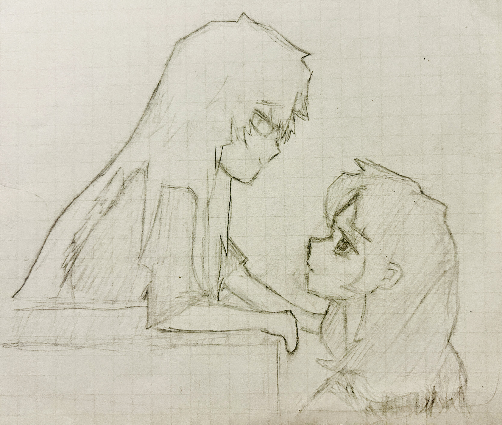

YURI!
2026.09.22
YURI! if you don’t know what yuri is, its just girls love. i love it it’s so cute. i have been drawing relentlessly and improving at a pace i cannot comprehend, but it’s seriously epic. i love my style and i love learning new drawing things. oh, here it is:

ok. see ya.